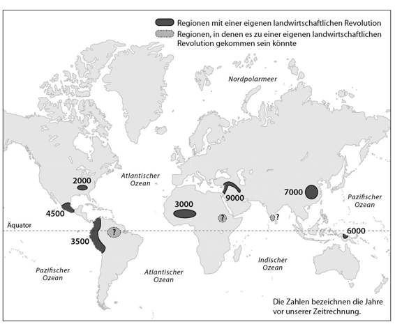
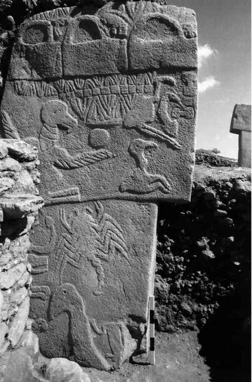
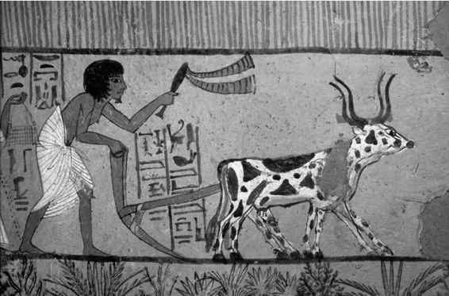

Kapitel 5
Der größte Betrug der Geschichte
Zweieinhalb Millionen Jahre lang ernährten sich die Menschen von Pflanzen und Tieren, die ohne menschliche Eingriffe lebten und sich vermehrten. Der Homo erectus, der Homo ergaster und der Neandertaler pflückten wilde Feigen und jagten wilde Schafe, ohne je zu versuchen, in das Leben der Feigen und Schafe einzugreifen. Sie trafen keine Entscheidungen darüber, wo ein Feigenbaum wachsen, wo eine Herde grasen und welcher Bock sich mit welchem Schaf paaren sollte. Mehrere Zehntausend Jahre lang hielt auch der Homo sapiens seine Nase aus den Privatangelegenheiten anderer Tierarten heraus. Er breitete sich von Ostafrika über den Nahen Osten nach Europa und Asien aus und kam schließlich bis nach Australien und Amerika, und überall ernährte er sich, indem er wilde Pflanzen sammelte und wilde Tiere jagte. Warum auch mehr tun, wenn das ausreichte, um sich zu ernähren und eine große Vielfalt von Gesellschaften, Religionen und politischen Strukturen zu unterhalten?
Das änderte sich vor etwa 10000 Jahren. Damals begannen die Sapiens, ihre Anstrengungen fast ausschließlich auf die Manipulation einiger weniger Tier- und Pflanzenarten zu bündeln. Von Sonnenaufgang bis Sonnenuntergang säten sie Samen, bewässerten Pflanzen, jäteten Unkraut und führten Schafe auf saftige Weiden. Davon erhofften sie sich mehr Früchte, mehr Getreide und mehr Fleisch. Das Ergebnis war eine Revolution im Alltag der Menschen: die sogenannte landwirtschaftliche Revolution.
Der Übergang zur Landwirtschaft begann vor gut 11500 Jahren in den Hügeln der Südosttürkei, des Westiran und der Levante. Die Revolution begann allmählich und blieb zunächst auf kleine Regionen beschränkt. Zuerst wurden Weizen und Ziegen domestiziert, Erbsen und Linsen folgten vor rund 10000 Jahren, Olivenbäume vor 7000, Pferde vor 6000 und Wein vor 5500 Jahren. Trotz all unserer wunderbaren modernen Erfindungen beziehen wir bis heute mehr als 90 Prozent unseres Kalorienbedarfs aus einer Handvoll von Pflanzenarten, die unsere Vorfahren zwischen 9500 und 3500 vor unserer Zeitrechnung domestiziert haben – Weizen, Reis, Mais, Kartoffeln, Hirse und Gerste. In den vergangenen zwei Jahrtausenden kamen keine nennenswerte Pflanzen- oder Tierarten mehr hinzu. Wir denken und fühlen bis heute zwar wie die Jäger und Sammler, doch wir ernähren uns wie die ersten Bauern.
Wissenschaftler waren lange der Ansicht, die Landwirtschaft habe sich von einem einzigen Gewächshaus im Nahen Osten in alle vier Himmelsrichtungen ausgebreitet. Heute ist sich die Forschung dagegen einig, dass die landwirtschaftliche Revolution nicht von den Bauern des Nahen Ostens exportiert wurde, sondern in verschiedenen Teilen der Welt völlig unabhängig begann. Die Menschen in Mittelamerika züchteten ihre Maiskolben und Bohnen, ohne etwas vom Weizen- und Erbsenanbau im Nahen Osten zu wissen. Die Menschen in Südamerika züchteten ihre Kartoffeln und Lamas, ohne von den Bauern in Mexiko oder der Levante gehört zu haben. Die ersten chinesischen Landwirte pflanzten Reis und Hirse und hielten Schweine. In Nordamerika waren es die Menschen irgendwann leid, im Unterholz nach Gürkchen zu suchen, und züchteten Kürbisse. Neuguinea hatte eine süße Revolution und bändigte Zuckerrohr und Bananen, während in Westafrika die ersten Bauern Hirse, Reis, Sorghum und Weizen zähmten. Von diesen Zentren ausgehend breitete sich die Landwirtschaft immer weiter aus. Im Jahr Null unserer modernen Zeitrechnung bestand die Menschheit zum überwiegenden Teil aus Bauern.
Aber warum kam es im Nahen Osten, in China und Mittelamerika zu einer landwirtschaftlichen Revolution, während sie in Australien, Skandinavien oder Südafrika ausblieb? Die Antwort ist ganz einfach: Die meisten Tier- und Pflanzenarten lassen sich nicht vom Menschen bezähmen. Die Sapiens konnten köstliche Trüffeln ausgraben und haarige Mammuts jagen, doch züchten konnten sie diese Arten nicht – dazu waren die Pilze zu komplex und die Mammuts zu wild. Von den vielen Tausend Arten, von denen sich die Jäger und Sammler ernährten, eigneten sich nur wenige zur Züchtung. Die landwirtschaftliche Revolution begann da, wo diese Arten vorkamen.

Karte 2. Orte und Daten der landwirtschaftlichen Revolutionen. Die Daten sind strittig, und mit jedem neuen archäologischen Fund muss die Karte korrigiert werden.26
*
Lange wollte uns die Wissenschaft den Übergang zur Landwirtschaft als großen Sprung für die Menschheit verkaufen und erzählte uns eine Geschichte von Fortschritt und Intelligenz. Im Laufe der Evolution seien die Menschen immer intelligenter geworden. Irgendwann seien sie dann so intelligent gewesen, dass sie die Geheimnisse der Natur entschlüsseln konnten und lernten, Schafe zu halten und Weizen anzubauen. Danach gaben sie begeistert das entbehrungsreiche und gefährliche Leben der Jäger und Sammler auf und ließen sich nieder, um als Bauern ein angenehmes Dasein im Wohlstand zu genießen.
Das ist jedoch ein Ammenmärchen. Es ist keineswegs bewiesen, dass die Menschen im Laufe ihrer Evolution immer intelligenter wurden. Die Wildbeuter kannten die Geheimnisse der Natur schon lange vor der landwirtschaftlichen Revolution, denn ihr Überleben hing davon ab, dass sie die Tiere und Pflanzen, von denen sie sich ernährten, genauestens kannten. Die landwirtschaftliche Revolution läutete auch keine Ära des angenehmen Lebens ein, ganz im Gegenteil, der Alltag der Bauern war härter und weniger befriedigend als der ihrer Vorfahren. Die Jäger und Sammler ernährten sich gesünder, arbeiteten weniger, gingen interessanteren Tätigkeiten nach und litten weniger unter Hunger und Krankheiten. Mit der landwirtschaftlichen Revolution nahm zwar die Gesamtmenge der verfügbaren Nahrung zu, doch die größere Menge an Nahrungsmitteln bedeutete keineswegs eine bessere Ernährung oder mehr Freizeit. Im Gegenteil, die Folgen waren eine Bevölkerungsexplosion und die Entstehung einer verwöhnten Elite. Im Durchschnitt arbeiteten die Bauern mehr als die Jäger und Sammler und bekamen zum Dank eine ärmere Kost. Die landwirtschaftliche Revolution war der größte Betrug der Geschichte.
Aber wer hat diesen Betrug zu verantworten? Es waren weder Könige noch Priester oder Händler. Die Schuldigen waren eine Handvoll Pflanzenarten, zum Beispiel Weizen, Reis und Kartoffeln. In Wirklichkeit waren es diese Pflanzen, die den Homo sapiens domestizierten, nicht umgekehrt.
Sehen wir uns die landwirtschaftliche Revolution einmal aus der Sicht des Weizens an. Vor zehntausend Jahren war der Weizen nur eines von vielen Wildgräsern, das nur im Nahen Osten vorkam. Innerhalb weniger Jahrtausende breitete er sich von dort über die gesamte Welt aus. Nach den Überlebens- und Fortpflanzungsgesetzen der Evolution ist der Weizen damit eine der erfolgreichsten Pflanzenarten aller Zeiten. In Regionen wie dem Mittleren Westen der Vereinigten Staaten, wo vor zehntausend Jahren noch nicht ein einziger Weizenhalm wuchs, kann man heute Hunderte Kilometer fahren, ohne eine andere Pflanze zu sehen. Weltweit sind 2,25 Millionen Quadratkilometer (fast das Zehnfache der Fläche Großbritanniens) mit Weizen und nichts als Weizen bedeckt! Wie hat der Weizen das geschafft?
Indem er den armen Homo sapiens aufs Kreuz legte. Diese Affenart hatte bis vor zehntausend Jahren ein angenehmes Leben als Jäger und Sammler geführt, doch dann investierte sie immer mehr Energie in die Vermehrung des Weizens. Irgendwann ging das so weit, dass die Sapiens in aller Welt kaum noch etwas anderes taten, als sich von früh bis spät um diese Pflanze zu kümmern.
Das war harte Arbeit, denn der Weizen ist eine äußerst anspruchsvolle Pflanze. Er mag keine Steine, weshalb sich die Sapiens krumm buckelten, um sie von den Feldern zu sammeln. Er teilt seinen Lebensraum, sein Wasser und andere Nährstoffe nicht gern mit anderen Pflanzen, also jäteten die Sapiens tagein, tagaus unter der glühenden Sonne Unkraut. Der Weizen wurde leicht krank, also mussten die Sapiens nach Würmern und anderen Schädlingen Ausschau halten. Weizen kann sich nicht vor anderen Organismen wie Kaninchen und Heuschrecken schützen, die ihn gern fressen, weshalb die Bauern ihn schützen mussten. Weizen ist durstig, also schleppten die armen Sapiens Wasser aus Quellen und Flüssen herbei, um ihn zu bewässern. Und der Weizen ist hungrig, weshalb die Menschen Tierkot sammelten, um den Boden zu düngen, auf dem er wuchs.
Für derlei Arbeiten ist der Körper des Homo sapiens vollkommen ungeeignet. Er wurde von der Evolution geschaffen, auf Bäume zu klettern und hinter Gazellen herzujagen, und nicht Steine vom Boden aufzulesen und Wassereimer zu schleppen. Rücken, Knie, Gelenke und viele andere Körperteile zahlten einen hohen Preis für die landwirtschaftliche Revolution. Untersuchungen von fossilen Skeletten zeigen, dass der Übergang zur Landwirtschaft ein Füllhorn von Leiden mit sich brachte, von Rücken- und Gelenkschmerzen bis hin zu Leistenbrüchen. Die neuen Aufgaben der Landwirtschaft nahmen außerdem derart viel Zeit in Anspruch, dass sich die Menschen dauerhaft neben ihren Weizenfeldern niederlassen und ihre gesamte Lebensweise umstellen mussten. Nicht wir haben den Weizen domestiziert, der Weizen hat uns domestiziert. Das Wort »domestizieren« kommt von lateinischen Wort domus für »Haus«. Wer lebt eingesperrt in Häusern? Der Mensch, nicht der Weizen.
Aber wie brachte der Weizen den Homo sapiens dazu, sein relativ angenehmes Leben gegen eine derart armselige Existenz einzutauschen? Was hatte er als Entschädigung zu bieten? Eine bessere Ernährung war es jedenfalls nicht. Die Menschen waren schließlich Allesfresser, die sich über Jahrmillionen hinweg von einer sehr vielseitigen Kost ernährt hatten. Vor der Erfindung der Landwirtschaft hatten sie so gut wie keine Körner auf dem Speisezettel gehabt. Eine auf Getreide basierende Kost ist arm an Mineralien und Vitaminen, schwer verdaulich und ganz schlecht für Zähne und Zahnfleisch.
Der Weizen bot den Menschen auch keine größere wirtschaftliche Sicherheit. Im Gegenteil, das Leben der Bauern ist unsicherer als das der Jäger und Sammler. Wildbeuter ernährten sich von Dutzenden Tier- und Pflanzenarten und konnten daher auch schwere Zeiten durchstehen, ohne sich Vorräte anzulegen. Wenn eine Art ausfiel, gab es genug andere, auf die sie ausweichen konnten. Im Gegensatz dazu nahmen Bauern bis vor Kurzem einen Großteil ihres Kalorienbedarfs über eine Handvoll von Nutzpflanzen auf, oft sogar nur eine einzige. Wenn der Regen ausblieb, Heuschreckenschwärme einfielen oder diese Pflanze von Pilzen befallen wurde, starben die Bauern zu Tausenden oder Millionen.
Der Weizen bot auch keinen Schutz vor menschlicher Gewalt. Die ersten Bauern waren mindestens so gewalttätig wie ihre Vorfahren, wenn nicht gewalttätiger. Bauern hatten mehr Besitzgegenstände und benötigten Land, um ihre Pflanzen anzubauen. Wenn sie eine Weide an ihre Nachbarn verloren, konnte dies den Hungertod bedeuten, weshalb sie viel weniger Spielraum für Kompromisse hatten. Wenn Wildbeuter von einer rivalisierenden Gruppe bedrängt wurden, konnten sie ausweichen. Das war zwar schwierig und gefährlich, doch es war möglich. Wenn dagegen ein Bauerndorf von einem stärkeren Feind bedroht wurde, konnten die Bewohner nicht ausweichen, ohne ihre Felder, Häuser und Schuppen zurückzulassen und den Hungertod zu riskieren. Daher blieben die Bauern und kämpften bis zum bitteren Ende.
Untersuchungen von Anthropologen und Archäologen zeigen, dass in einfachen landwirtschaftlichen Gesellschaften, die sich nicht über das Dorf oder den Stamm hinaus organisierten, etwa 15 Prozent aller Menschen eines gewaltsamen Todes starben; bei den Männern waren es gar 25 Prozent. Auf Neuguinea sterben noch immer 30 Prozent aller männlichen Angehörigen des Stammes der Dani an den Folgen von Gewalteinwirkung, und unter den Enga sind es 35 Prozent. Und in Ecuador könnten sogar 60 Prozent aller männlichen Krieger der Woaranis durch Menschenhand zu Tode kommen.27 Im Laufe der Zeit wurde die Gewalt durch die Gründung von Städten, Reichen und Staaten eingedämmt, doch es dauerte Jahrtausende, um derart große und effektive Strukturen zu errichten.
Für uns, die wir in unseren modernen Industriegesellschaften leben, ist dies nur schwer nachvollziehbar. Wir leben in Wohlstand und Sicherheit, und da beides auf dem Fundament der landwirtschaftlichen Gesellschaft errichtet wurde, gehen wir davon aus, dass dies eine wunderbare Errungenschaft gewesen sein muss. Es wäre jedoch falsch, Jahrtausende der Geschichte im Rückblick zu beurteilen. Repräsentativer wäre die Sicht eines dreijährigen Mädchens im China des ersten Jahrhunderts, das an Unterernährung stirbt. Dieses Mädchen hat sich sicher nicht gesagt: »Wie schade, dass ich verhungere. Aber weil die Menschen in zweitausend Jahren genug zu essen haben und in klimatisierten Häusern wohnen, hat sich mein Leid gelohnt.«
Was also bot der Weizen diesem verhungernden Mädchen und den anderen Angehörigen der bäuerlichen Gesellschaften? Dem Einzelnen hatte er gar nichts zu bieten – wohl aber der Art des Homo sapiens. Der Weizenanbau bedeutet mehr Kalorien pro Fläche, und das wiederum ermöglichte dem Homo sapiens, sich exponentiell zu vermehren. Vor 15000 Jahren, als die Menschen noch Wildpflanzen sammelten und Wildtiere jagten, konnte die Region um die Oase von Jericho in Palästina eine Gruppe von etwa hundert mehr oder weniger gesunden Menschen ernähren. Vor 10500 Jahren, als die Wildpflanzen durch Weizenfelder ersetzt wurden, ernährte die Oase eine große Siedlung, in der sich tausend kränkliche und hungrige Menschen zusammendrängten.
Die Währung der Evolution ist weder Hunger noch Leid, sondern DNA. So wie sich der wirtschaftliche Erfolg eines Unternehmens in Dollar auf einem Bankkonto messen lässt, so lässt sich der evolutionäre Erfolg einer Art an der Anzahl der vorhandenen DNA-Moleküle messen. Wenn keine DNA mehr übrig ist, dann ist die Art ausgestorben, genau wie eine Firma Pleite geht, wenn sie kein Geld mehr hat. Wenn eine Art auf viele DNA-Moleküle verweisen kann, ist sie ein Erfolg und floriert. So gesehen sind tausend Exemplare besser als hundert. So funktioniert unterm Strich auch die landwirtschaftliche Revolution: Sie ernährte mehr Menschen, wenn auch unter schlechteren Bedingungen.
Aber warum sollten sich die Einzelnen für die Rechenspiele der Evolution interessieren? Warum sollte ein vernünftiger Mensch freiwillig seinen Lebensstandard senken, nur um mehr Sapiens-DNA in die Welt zu setzen? Aber diese Frage stellt sich so nicht, denn niemand entschied sich bewusst für dieses Tauschgeschäft. Die Menschen stimmten nicht über die landwirtschaftliche Revolution ab. Sie liefen in eine Falle.
Die Luxusfalle
Die landwirtschaftliche Revolution vollzog sich allmählich und dauerte Jahrhunderte und Jahrtausende. Eine Gruppe von Homo sapiens, die eben noch Pilze und Nüsse gesammelt und Hasen und Rehe gejagt hatte, zog nicht von einem Tag auf den anderen in Hütten, pflügte Felder, säte Weizen und schleppte Wasser vom Fluss heran. Der Wandel erfolgte in vielen Trippelschritten, von denen jeder nur eine winzige Veränderung des Alltags bedeutete.
Der Homo sapiens wanderte vor etwa 70000 Jahren im Nahen Osten ein. Dort lebte er die nächsten 50000 Jahre, ohne sich als Bauer zu betätigen. Es gab genug Ressourcen in der Region, um die menschliche Population zu ernähren. In guten Zeiten bekamen die Menschen mehr Kinder, in schlechten weniger. Beim Menschen wird die Fortpflanzung genau wie bei vielen Tierarten über hormonelle und genetische Mechanismen gesteuert. In guten Zeiten kommen die Mädchen früher in die Pubertät und werden eher schwanger, in schlechten Zeiten werden sie später geschlechtsreif und bekommen im Laufe ihres Lebens entsprechend weniger Nachwuchs.
Zu dieser natürlichen Geburtenkontrolle kamen kulturelle Mechanismen. Säuglinge und Kleinkinder, die sich nur langsam fortbewegen und viel Zuwendung verlangen, waren den umherziehenden Wildbeutern eine Last. Frauen bekamen höchstens alle drei oder vier Jahre ein Kind. Diesen Rhythmus konnten sie einhalten, weil sie ihre Kinder rund um die Uhr stillten, bis diese relativ groß waren (Stillen verringert die Wahrscheinlichkeit einer weiteren Schwangerschaft), weil sie sexuell enthaltsam blieben (möglicherweise unterstützt durch kulturelle Tabus), weil sie abtrieben und weil sie ihre Kinder gelegentlich töteten.28
In diesen langen Jahrtausenden aßen die Menschen hin und wieder auch ein paar Weizenkörner, doch diese machten nur einen kleinen Teil ihrer Ernährung aus. Vor rund 18000 Jahren endete dann die letzte Eiszeit und eine Periode der weltweiten Erwärmung setzte ein. Mit den Temperaturen stiegen auch die Niederschlagsmengen. Das neue Klima des Nahen Ostens war ideal für Weizen und andere Getreidearten, die sich vermehrten und verbreiteten. Die Menschen aßen mehr Weizen und machten damit unbewusst Werbung für ihn. Da die Grassamen vor dem Verzehr geschält, gemahlen und gegart werden müssen, mussten sie in die Lager gebracht und dort verarbeitet werden. Weizenkörner sind klein und zahlreich, weshalb auf dem Weg zum Lager unweigerlich einige verloren gingen. So kam es, dass im Laufe der Zeit entlang der Pfade und in der Nähe der Lagerstätten der Menschen immer mehr Weizen wuchs.
Auch die Brandrodung kam dem Weizen zugute. Das Feuer lichtete Bäume und Sträucher und verschaffte dem Weizen und anderen Gräsern den Zugang zu Licht, Wasser und weiteren Nährstoffen. Wo der Weizen besonders üppig wuchs und Wild und andere Nahrungsquellen besonders reichlich vorkamen, gaben die Menschen allmählich ihre nomadische Lebensweise auf und ließen sich in festeren Lagern nieder, in denen sie über eine oder mehrere Jahreszeiten hinweg blieben.
Zunächst blieben sie vier Wochen, während der Erntezeit. Eine Generation später blieb das Erntelager schon fünf Wochen bestehen, dann sechs, und schließlich verwandelte es sich in eine feste Siedlung. Überreste solcher Dörfer wurden im gesamten Nahen Osten gefunden, besonders in der Levante, wo zwischen 12500 und 9500 vor unserer Zeitrechnung die Natufienkultur blühte. Die Natufier waren Jäger und Sammler, die sich von Dutzenden Tier- und Pflanzenarten ernährten, aber in festen Siedlungen lebten und sich der intensiven Sammlung und Verarbeitung von wildem Getreide widmeten. Sie errichteten Häuser und Schuppen aus Stein, lagerten das Getreide für schlechte Zeiten ein und erfanden neue Werkzeuge wie Steinsicheln zur Ernte der Wildgräser und Steinmörser zu ihrer Verarbeitung.
Auch die Nachfahren der Natufier sammelten und verarbeiteten Wildgetreide, doch sie begannen nun damit, die Pflanzen zu züchten. Sie legten einen Teil der eingesammelten Körner beiseite, um sie im nächsten Frühjahr auszusäen. Dabei stellten sie fest, dass sie bessere Ernten erzielten, wenn sie das Getreide tiefer in den Boden einbrachten und es nicht einfach willkürlich ausstreuten. Sie begannen zu harken und zu pflügen. Allmählich jäteten sie auch Unkraut, schützten die Felder vor Parasiten und wässerten und düngten sie. Je mehr Zeit sie auf den Anbau von Getreide verwendeten, umso weniger Zeit blieb ihnen, um wilde Arten zu sammeln und zu jagen. Aus den Wildbeutern wurden Bauern.
Der Übergang von der Frau, die Wildweizen sammelt, zu der Frau, die angebauten Weizen verarbeitet, ist fließend. Deshalb ist es schwer, einen genauen Zeitpunkt für den Beginn der Landwirtschaft zu benennen. Aber vor 10500 Jahren fanden sich überall im Nahen Osten feste Siedlungen wie Jericho, deren Einwohner ihre Zeit überwiegend mit dem Anbau einiger weniger Pflanzenarten zubrachten.
Mit der Gründung fester Siedlungen und der Zunahme der Nahrungsmenge wuchs auch die Bevölkerung. Nachdem die Menschen sesshaft geworden waren, konnten Frauen jedes Jahr ein Kind zur Welt bringen. Babys wurden eher abgestillt, an die Stelle der Muttermilch traten Haferschleim und Getreidebreie. Die zusätzlichen Hände wurden dringend auf dem Acker gebraucht. Doch die zusätzlichen Münder aßen den Überschuss schnell auf und verlangten nach mehr. So kam es, dass die Kinder im Durchschnitt schlechter dran waren als zuvor. Da die Menschen in schmutzigen und verkeimten Siedlungen lebten, die Kinder mehr Getreide und weniger Muttermilch bekamen und jedes Kind mit immer mehr Geschwistern um den Haferschleim konkurrierte, schoss die Kindersterblichkeit in die Höhe. In den bäuerlichen Gesellschaften starb mindestens jedes dritte Kind vor Erreichen des zwanzigsten Lebensjahrs.29 Doch die Zahl der Geburten nahm immer noch schneller zu als die der Sterbefälle, weshalb die Menschen immer mehr und immer elendere Kinder hatten.
Mit der Zeit wurde der »Weizenhandel« immer beschwerlicher. Die Kinder starben wie die Fliegen, die Erwachsenen aßen ihr Brot im Schweiße ihres Angesichts. Der Durchschnittsbauer, der vor 10500 Jahren in Jericho lebte, hatte ein deutlich schwereres Leben als der Durchschnittswildbeuter, der tausend oder dreitausend Jahre vor ihm in der Gegend lebte. Aber das bemerkte natürlich niemand. Jede Generation lebte im Grunde genau so wie die ihrer Eltern, nur ein bisschen effizienter. Paradoxerweise summierte sich die Abfolge von »Verbesserungen«, die den Menschen eigentlich das Leben erleichtern sollten, im Lauf der Zeit zu einer drastischen Verschlechterung.
Wie konnten sich die Menschen derart verkalkulieren? Aus demselben Grund, aus dem sich Menschen im Laufe der Geschichte immer wieder verrechneten. Sie waren ganz einfach nicht in der Lage, ihre Entscheidungen mit all ihren Konsequenzen zu überblicken. Jedes Mal, wenn sie sich entschieden, mehr Arbeit zu investieren und zum Beispiel ein Feld zu pflügen, statt die Samen einfach nur auszustreuen, dachten sie: »Wir müssen zwar mehr arbeiten, aber dafür fällt die Ernte umso reichlicher aus! Wir müssen uns keine Gedanken mehr über magere Jahre machen. Unsere Kinder werden nie mehr hungrig einschlafen müssen. Das Leben wird so gut!« Mehr Arbeit für ein besseres Leben. Soweit der Plan.
Der erste Teil des Plans war einfach. Die Menschen arbeiteten mehr. Aber der zweite Teil scheiterte an unvorhergesehenen Wendungen. Die Menschen sahen nicht vorher, dass sie mehr Kinder bekommen würden und dass sie mit der zusätzlichen Ernte nun mehr Münder ernähren mussten. Sie wussten nicht, dass das Immunsystem der Kinder geschwächt würde, wenn sie mehr Haferschleim und weniger Muttermilch bekamen. Sie ahnten nicht, dass sie mit der Abhängigkeit von einer einzigen Nahrungsquelle die Verheerungen einer Dürre deutlich schmerzhafter zu spüren bekommen würden. Und genauso wenig sahen sie vorher, dass in guten Jahren ihre vollen Getreidespeicher Diebe und Feinde anlocken würden, weshalb sie Mauern bauen und Wachen aufstellen mussten.
Aber warum gaben sie den Plan dann nicht einfach auf, als er sich als Bumerang erwies? Zum einen, weil Jahrzehnte ins Land gingen, bevor irgendjemand hätte erkennen können, dass die Dinge nicht nach Plan verliefen und weil sich dann – Generationen später – sowieso niemand mehr erinnerte, dass das Leben jemals anders gewesen war. Und zum anderen, weil das Bevölkerungswachstum jede Rückkehr zum früheren Leben unmöglich machte. Wenn die Dorfbevölkerung dank des Weizenanbaus von 100 auf 110 angewachsen war, welche 10 Menschen wären dann freiwillig verhungert, damit die Übrigen zur Lebensweise der guten alten Zeit zurückkehren konnten? Es führte kein Weg zurück. Die Falle war zugeschnappt.
Der Traum vom besseren Leben fesselte die Menschen ans Elend. Es sollte nicht das letzte Mal gewesen sein: Was das bedeutet, können wir heute am eigenen Leib erfahren. Wie viele junge Menschen haben nicht nach dem Studium eine Stelle in einem großen Unternehmen angenommen und sich geschworen, sie würden ein paar Jahre ordentlich ranklotzen, Geld auf die hohe Kante legen und mit vierzig den Job an den Nagel hängen, um ihren wahren Interessen nachzugehen? Aber wenn der vierzigste Geburtstag naht, haben sie eine Hypothek und schulpflichtige Kinder am Bein und meinen, ohne Mercedes und Bordeaux nicht mehr leben zu können. Was sollen sie tun? Wieder Wurzeln ausgraben? Natürlich nicht. Stattdessen kämpfen sie um eine Beförderung und strampeln sich weiter ab.
Eines der ehernen Gesetze der Geschichte lautet, dass ein Luxus schnell zur Notwendigkeit wird und neue Zwänge schafft. Sobald wir uns an einen Luxus gewöhnt haben, verkommt er zur Selbstverständlichkeit. Erst wollen wir nicht mehr ohne ihn leben, und irgendwann können wir es nicht mehr. Nehmen wir ein Beispiel, das Ihnen bekannt vorkommen könnte. In den vergangenen Jahrzehnten wurden zahllose Maschinen erfunden, die uns das Leben erleichtern sollen: Waschmaschinen, Staubsauger, Geschirrspülmaschinen, Telefone, Mobiltelefone, Computer, E-Mail. Früher hat es viel Zeit gekostet, einen Brief zu schreiben, einen Umschlag zu kaufen, ihn zur Post zu bringen und abzuschicken. Die Antwort ließ Tage und Wochen auf sich warten. Heute können wir innerhalb einer halben Minute eine E-Mail schreiben und sofort eine Antwort bekommen. Haben wir jetzt mehr Zeit für uns selbst?
Im Gegenteil. In Zeiten der Schneckenpost haben wir nur Briefe geschrieben, wenn wir wirklich etwas mitzuteilen hatten. Wir haben nicht einfach geschrieben, wie uns der Schnabel gewachsen war, sondern haben sorgfältig über den Inhalt nachgedacht und an Formulierungen gefeilt. Als Antwort haben wir einen genauso durchdachten Brief erwartet. Pro Monat haben wir eine Handvoll Briefe geschrieben, eifrige Schreiber kamen auf einige Dutzend, und kaum jemand setzte sich sofort nach Erhalt eines Briefes hin, um eine Antwort zu schreiben. Heute bekommen wir pro Tag Dutzende Mails, die alle umgehend beantwortet werden wollen. Mit dem Versuch, Zeit zu sparen, haben wir lediglich die Schlagzahl erhöht und unser Leben noch hektischer gemacht.
Hier und da kann man noch einem Don Quijote begegnen, der sich standhaft weigert, ein E-Mail-Konto einzurichten. Genauso gab es vor ein paar Jahrtausenden Gruppen von Menschen, die keine Bauern wurden und nicht in die Luxusfalle tappten. Aber um die landwirtschaftliche Revolution in Gang zu bringen, mussten gar nicht alle Menschen mitmachen. Es reichte schon, wenn ein paar in die Falle gingen. Sobald sich im Nahen Osten oder in Zentralamerika auch nur eine einzige Gruppe niederließ und mit der Aussaat anfing, begann der unaufhaltsame Weg in die Landwirtschaft. Da der Getreideanbau ein rasches Bevölkerungswachstum ermöglichte, waren die Bauern den Jägern und Sammlern zahlenmäßig schon bald überlegen. Die Wildbeuter konnten entweder das Weite suchen und ihre Jagdgründe den Bauern überlassen, die sie in Weiden und Ackerland verwandelten. Oder sie konnten sich selbst vor den Pflug spannen. So oder so war ihre alte Lebensweise dem Untergang geweiht.
Aus der Geschichte der Luxusfallen können wir eine wichtige Lektion lernen. Bei dem Versuch, winzige Fortschritte zu erringen, setzen wir immense Energien frei und bewirken Veränderungen, die niemand vorhersehen konnte und die auch niemand in dieser Form wollte. Niemand konnte die landwirtschaftliche Revolution vorhersehen und niemand wollte sie. Eine Abfolge winziger Entscheidungen, mit denen sich die Menschen den Magen füllen und ein bisschen Sicherheit gewinnen wollten, summierte sich so lange, bis die alten Wildbeuter unter sengender Sonne Wassereimer schleppten.
Göttliche Einmischung
Die Theorie der Luxusfalle erklärt die landwirtschaftliche Revolution als Ergebnis einer fatalen Fehlkalkulation. Das klingt durchaus plausibel – die Geschichte kennt noch viel dümmere Irrtümer. Es gibt jedoch noch eine andere Möglichkeit. Könnte es sein, dass es den Menschen nicht nur um Wohlstand und Sicherheit ging? Könnten sie andere Ziele verfolgt und sich das Leben bewusst schwer gemacht haben, um sie zu erreichen?
Wissenschaftler erklären historische Entwicklungen gern mit kalten wirtschaftlichen und demographischen Daten. Das passt besser zu ihren rationalen Methoden und mathematischen Modellen. Bei der Erklärung der modernen Geschichte können sie nicht umhin, auch nicht-materielle Faktoren wie Ideologie und Kultur einzubeziehen, weil sie durch schriftliche Zeugnisse dazu gezwungen werden. Es gibt genug Dokumente, Briefe und Memoiren, aus denen hervorgeht, dass der Zweite Weltkrieg weder durch Hunger noch durch Überbevölkerung ausgelöst wurde. Aber die Natufier haben keine Dokumente hinterlassen, weshalb beim Umgang mit alten Kulturen materialistische Erklärungen vorherrschen. Es ist schwer zu beweisen, dass schriftlose Völker nicht durch wirtschaftliche Zwänge motiviert wurden, sondern durch ihre Überzeugungen.
Aber in einigen Fällen haben wir Glück und finden entscheidende Hinweise. Im Jahr 1995 gruben deutsche Archäologen auf dem Hügel Göbekli Tepe im Südosten der Türkei eine faszinierende Anlage aus. In der ältesten Schicht fanden sie keinerlei Hinweise auf Siedlungen, Gebäude oder Alltagsleben. Stattdessen entdeckten sie gewaltige Säulenbauten, die mit einmaligen Reliefen verziert waren. Die einzelnen Pfeiler wogen bis zu sieben Tonnen und waren bis zu fünf Meter hoch. In einem nah gelegenen Steinbruch fanden sie sogar einen halbfertigen Pfeiler, der mehr als fünfzig Tonnen wog. Bisher haben die Archäologen mehr als zehn solcher Bauwerke freigelegt, das größte mit einem Durchmesser von dreißig Metern.

10. Oben: Die Überreste eines monumentalen Bauwerks auf dem Göbekli Tepe. Unten: Eine der verzierten, rund fünf Meter hohen Säulen.

Archäologen kennen ähnliche Monumente von anderen Fundstätten in aller Welt, etwa Stonehenge in Südengland. Doch bei genaueren Untersuchungen der Anlage auf dem Göbekli Tepe machten sie eine erstaunliche Entdeckung. Stonehenge wurde vermutlich vor 4500 Jahren von einer bäuerlichen Gesellschaft errichtet. Die Bauwerke vom Göbekli Tepe werden dagegen auf ein Alter von 11500 Jahren geschätzt, und alles deutet darauf hin, dass sie von Wildbeutern erbaut wurden! Die Zunft der Archäologen betrachtete die Ergebnisse zunächst mit Skepsis, doch eine Untersuchung nach der anderen bestätigte das Alter der Anlage und die Tatsache, dass die Erbauer Wildbeuter gewesen sein mussten. Die Fähigkeiten der Jäger und Sammler sowie ihre gesellschaftliche und kulturelle Komplexität scheinen alles zu sprengen, was man bislang für möglich gehalten hätte.
Aber warum sollten Jäger und Sammler eine derartige Anlage errichten? Sie erfüllte keinen erkennbaren Zweck: Es handelte sich weder um einen Mammutschlachthof, noch bot sie Schutz vor Löwen oder Unwettern. Sie hatte eine geheimnisvolle kulturelle Bedeutung, die sich den Archäologen bislang nicht erschließt. Aber warum die Wildbeuter diese Anlage auch immer gebaut haben mögen, sie schien ihnen sehr wichtig zu sein. Denn um Göbekli Tepe zu errichten, mussten Tausende Menschen unterschiedlicher Gruppen und Stämme über lange Zeiträume hinweg zusammenarbeiten. Zu derartigen Anstrengungen sind nur hochentwickelte Religionen oder Ideologien imstande.
Der Göbekli Tepe gab noch ein weiteres sensationelles Geheimnis preis. Seit Jahrzehnten suchen Genetiker nach der Herkunft domestizierten Weizens. Jüngste Entdeckungen ergaben, dass zumindest eine Variante, das sogenannte Einkorn, seinen Ursprung am Fuß des Vulkans Karacadağ im Südosten der Türkei haben muss – gerade einmal dreißig Kilometer vom Göbekli Tepe entfernt.30
Das kann kein Zufall sein. Die Vermutung liegt nahe, dass die Anlage auf dem Göbekli Tepe irgendetwas mit der Domestizierung des Weizens und des Menschen zu tun haben muss. Um die Menschen zu ernähren, die derart monumentale Bauwerke errichteten, waren gewaltige Mengen an Lebensmitteln nötig. Es ist durchaus denkbar, dass die Jäger und Sammler nicht vom Weizensammeln zum Weizenanbau übergingen, um ihren üblichen Kalorienbedarf zu decken, sondern um einen Tempel zu bauen. Sollte das stimmen, dann könnten religiöse Überzeugungen die Menschen veranlasst haben, den hohen Preis zu zahlen, den der Weizen verlangte. Früher ging man davon aus, dass sich die Siedler erst in einem Dorf niederließen und dann in der Mitte einen Tempel errichteten. Göbekli Tepe lässt vermuten, dass erst der Tempel kam und dann das Dorf.
Die Opfer der Revolution
Dieser Handel zwischen Mensch und Pflanze war nicht der einzige Pakt des Menschen mit dem Teufel. Ein anderer betraf das Schicksal von Schafen, Ziegen, Schweinen und Hühnern.
Mit ihrer Jagd auf wilde Schafe veränderten Nomadengruppen ganz allmählich die Zusammensetzung der freilebenden Herden. Vermutlich gingen die Jäger zunächst einfach selektiv vor: Sie lernten, dass es besser war, nur ausgewachsene Widder oder alte und kranke Schafe zu erlegen und fruchtbare Weibchen und Lämmer zu verschonen, wenn sie die Herde langfristig erhalten wollten. Irgendwann gingen sie wahrscheinlich dazu über, die Herden aktiv vor Raubtieren zu schützen und Löwen, Wölfe und konkurrierende menschliche Jäger zu vertreiben. Später trieben sie die Tiere vielleicht in einer Schlucht zusammen, um sie dort besser im Auge behalten und beschützen zu können. Und schließlich wählten sie die Schafe immer sorgfältiger nach ihren Bedürfnissen aus. Die aggressivsten Widder, die den größten Widerstand gegen die menschliche Herrschaft zeigten, wurden als Erste geschlachtet. Ihnen folgten dürre und neugierige Weibchen (Schäfer mögen keine Schafe, die sich aus Neugierde weit von der Herde entfernen). Mit jeder Generation wurden die Schafe fetter, gefügiger und träger. So entstand das Hausschaf.
Es könnte allerdings auch sein, dass Jäger ein Lamm fingen und »adoptierten«, es während der fetten Monate fütterten und während der mageren Monate aßen. Irgendwann könnten sie so eine Menge Schafe gehalten haben. Einige davon erreichten die Geschlechtsreife und vermehrten sich. Die aufsässigsten Schafe wurden als Erste geschlachtet, die fügsamsten und freundlichsten durften länger leben und sich vermehren. Das Ergebnis war eine Herde fügsamer und friedlicher Schafe.
Die so domestizierten Tiere – Schafe, Hühner, Esel und so weiter – lieferten Nahrung (Fleisch, Milch und Eier), Rohstoffe (Häute und Wolle) sowie Muskelkraft. Transport, Pflügen, Mahlen und andere Aufgaben, die bislang von menschlichen Muskeln erledigt worden waren, wurden nun zunehmend auf die Schultern der Tiere verlagert. In den meisten bäuerlichen Gesellschaften kümmerten sich die Menschen in erster Linie um den Anbau von Pflanzen und betrieben die Viehzucht eher nebenher. Aber es gab und gibt auch Hirtengesellschaften, die vor allem auf der Ausbeutung von Tieren basieren.
Mit dem Menschen verbreiteten sich auch die Haustiere über den gesamten Planeten. Vor zehntausend Jahren lebten lediglich ein paar Millionen Schafe, Kühe, Ziegen und Hühner in einigen ausgewählten Nischen Afrikas, Asiens und Europas. Heute gibt es rund eine Milliarde Schafe, mehr als eine Milliarde Kühe und geschätzte 25 Milliarden Hühner, die auf dem gesamten Planeten leben. Das Haushuhn ist das am weitesten verbreitete Federtier aller Zeiten. Kuh und Hausschaf belegen die Plätze zwei und drei in der Rangliste der häufigsten Säugetierarten – gleich hinter dem Homo sapiens. Aus Sicht der Evolution, die den Erfolg einer Art an der Verbreitung der DNA misst, müsste die landwirtschaftliche Revolution eigentlich ein wahrer Segen für Hühner, Kühe und Schafe gewesen sein.
Leider ist die evolutionäre Sicht allein kein ausreichender Gradmesser für den Erfolg einer Art. Sie urteilt ausschließlich nach Überleben und Reproduktionserfolg und interessiert sich nicht für das individuelle Glück oder Leid. Der Evolution ist es gleichgültig, was die Tiere fühlen, sie zählt nur die Exemplare. Domestizierte Hühner und Kühe mögen zwar eine Erfolgsgeschichte der Evolution sein, doch sie gehören zu den unglücklichsten Lebewesen, die es je gab. Die Domestizierung der Tiere geht mit einer Reihe brutaler Praktiken einher, die im Laufe der Jahrhunderte immer grausamer wurden.
Ein freilebendes Huhn hat eine Lebenserwartung von sieben bis zwölf Jahren, ein Rind von 20 bis 25 Jahren. In freier Wildbahn sterben die meisten Hühner und Rinder zwar deutlich früher, aber sie haben gute Aussichten, ein paar Jährchen zu leben. Im Gegensatz dazu wird die überwiegende Mehrzahl der in Gefangenschaft lebenden Hühner und Rinder im Alter von wenigen Wochen oder Monaten geschlachtet, da dies aus wirtschaftlicher Sicht das optimale Alter ist. (Warum sollte man einen Hahn drei Jahre lang durchfüttern, wenn er schon nach drei Monaten sein Höchstgewicht erreicht hat?)
Legehennen, Milchkühe und Zugtiere dürfen länger leben. Doch der Preis ist die völlige Versklavung, Ausbeutung und Unterjochung unter eine Lebensweise, die nichts mit ihren natürlichen Bedürfnissen und Wünschen zu tun hat. Wir können beispielsweise annehmen, dass Stiere lieber in Gesellschaft ihrer Artgenossen über das offene Weideland streifen würden, statt Karren und Pflüge zu ziehen, während ein Affe die Peitsche über ihnen schwingt.
Um Stiere, Pferde, Esel und Kamele zu gehorsamen Zugtieren zu machen, mussten ihre natürlichen Instinkte und sozialen Beziehungen zerstört, ihre Aggression und Sexualität gebrochen und ihre Bewegungsfreiheit eingeschränkt werden. Dazu entwickelten Bauern die unterschiedlichsten Methoden, sie pferchten die Tiere in Käfige und Ställe, zügelten sie mit Stricken und Zaumzeug, zähmten sie mit Stöcken und Peitschen und verstümmelten sie. Zur Zähmung gehörte fast immer die Kastration der männlichen Tiere – das bändigt die männliche Aggression und gibt den Menschen die Möglichkeit, die Fortpflanzung der Herde zu kontrollieren.
In vielen Stämmen Neuguineas wird der Reichtum eines Stammesangehörigen traditionell an der Zahl seiner Schweine gemessen. Um sicherzustellen, dass die Schweine nicht davonlaufen, schneiden Bauern im Norden der Insel den Tieren ein Stück ihres Rüssels ab. Danach verursacht das Schnüffeln große Schmerzen. Da Schweine jedoch ohne ihren Geruchssinn keine Nahrung finden und sich nicht einmal orientieren können, werden sie durch diese Verstümmelung vollkommen abhängig von ihren menschlichen Besitzern. In einer anderen Gegend Neuguineas stechen die Bauern ihren Schweinen sogar die Augen aus, damit sie nicht davonlaufen.31

11. Zeichnung aus einem ägyptischen Grab, zirka 1200 vor unserer Zeitrechnung: Ein Ochsengespann pflügt einen Acker. Wilde Stiere streiften über Weideland und lebten in einer komplexen Herde mit anderen Stieren und Kühen. Die kastrierten und domestizierten Ochsen vegetierten dagegen im Schatten der Peitsche und des Stalls, sie arbeiteten allein oder in Paaren auf eine Weise, die weder ihrem Körper noch ihren sozialen und emotionalen Bedürfnissen entsprach. Wenn ein Ochse sein Soll nicht mehr erfüllte, wurde er geschlachtet. (Sehen Sie sich übrigens die gebückte Haltung des ägyptischen Bauern an – wie der Ochse verbrachte er sein Leben mit harter Arbeit, die ihm körperlich und geistig schadete.)
Die Milchwirtschaft hat ganz eigene Methoden zur Unterjochung der Tiere entwickelt. Kühe, Ziegen und Schafe geben nur Milch, wenn sie Kälber, Zicklein und Lämmer zur Welt gebracht haben, und dann auch nur so lange sie die Jungen säugen. Um den Milchfluss aufrechtzuerhalten, brauchen Bauern die Kälber, Zicklein und Lämmer, aber gleichzeitig müssen sie verhindern, dass diese die ganze Milch bekommen. Eine traditionelle Methode besteht darin, die Jungen einfach kurz nach ihrer Geburt zu schlachten, die Mutter so lange wie möglich zu melken und sie dann wieder zu schwängern. Diese Methode ist bis heute verbreitet. In modernen Milchbetrieben lebt eine Kuh in der Regel etwa fünf Jahre und wird dann geschlachtet. Während dieser fünf Jahre ist sie fast konstant trächtig und wird 60 bis 120 Tage nach der Geburt eines Jungen erneut gedeckt, um ein Maximum an Milch zu produzieren. Die Kälber werden kurz nach ihrer Geburt von ihrer Mutter getrennt; die weiblichen Kälber werden zur nächsten Generation der Milchkühe herangezogen, die männlichen Kälber werden der Fleischverarbeitung zugeführt.32
Eine andere Methode besteht darin, die Jungen bei der Mutter zu lassen, aber ihnen die Milch vorzuenthalten. Die einfachste Praxis ist, das Kalb oder Lamm ein wenig saugen zu lassen und es zu vertreiben, sobald der Milchfluss einsetzt. Diese Methode stößt natürlich sowohl beim Jungen als auch bei der Mutter auf Widerstand. Viele Hirten töteten daher das Junge, aßen sein Fleisch und stopften sein Fell aus. Dann zeigten sie der Mutter das ausgestopfte Junge, um durch den Anblick die Milchproduktion anzuregen. Die Angehörigen des Stammes der Nuer im Sudan rieben die ausgestopften Kälber mit dem Urin der Mutter ein, damit es lebendig und vertraut roch. Eine andere Methode der Nuer bestand darin, dem Kalb einen Dornenkranz um die Schnauze zu binden, um die Mutter beim Säugen zu stechen und deren Widerstand zu provozieren.33 Kamelzüchter der in der Sahara lebenden Tuareg verstümmelten die Nase und Oberlippe der jungen Kamele, damit die Tiere beim Saugen Schmerzen empfanden und nur wenig Milch tranken.34
Nicht alle bäuerlichen Gesellschaften behandelten ihre Tiere mit derartiger Grausamkeit. Einige Haustiere führten durchaus ein gutes Leben. Wollschafe, Haushunde und -katzen, Streitrosse und Rennpferde lebten oft unter sehr angenehmen Bedingungen. Der römische Kaiser Caligula soll sein Lieblingspferd Incitatus sogar zum Konsul ernannt haben. Viele Schäfer und Bauern behandelten ihre Tiere mit Zuneigung und Fürsorge, genau wie einige Sklavenhalter ihre menschlichen Sklaven mit Zuneigung und Fürsorge behandelten. Nicht umsonst wurde der Hirte zum Vorbild für Könige und Propheten.
Doch aus Sicht der Herde kommt man fast unweigerlich zu dem Schluss, dass die landwirtschaftliche Revolution für die überwiegende Mehrheit der domestizierten Tiere eine schreckliche Katastrophe bedeutete. Der evolutionäre Erfolg ist völlig bedeutungslos. Wenn Sie die Wahl hätten, als seltenes Nashorn zu leben, dessen Art vom Aussterben bedroht ist, oder als Kalb, das sein kurzes Leben in einer winzigen Kiste verbringt und gemästet wird, um zu saftigen Filets verarbeitet zu werden – wofür würden Sie sich entscheiden? Die Tatsache, dass das Nashorn das letzte seiner Art ist, ändert nichts an seiner Zufriedenheit. Umgekehrt ist der Reproduktionserfolg seiner Art kein Trost für ein leidendes Rind.
Dass der Unterschied zwischen evolutionärem Erfolg einerseits und individuellem Leid andererseits so gewaltig sein kann, ist vielleicht die wichtigste Lektion der landwirtschaftlichen Revolution. Bei Pflanzen wie Mais oder Weizen mag die rein evolutionäre Sicht noch sinnvoll sein. Doch bei Tieren wie Rindern, Schafen und Sapiens mit ihren komplexen Gefühlswelten müssen wir uns fragen, welche Auswirkungen der evolutionäre Erfolg auf das individuelle Erleben hat. In den folgenden Kapiteln werden wir noch öfter sehen, wie der »Erfolg« der Art und der dramatische Zuwachs an kollektiver Macht mit großem Leid für den Einzelnen einhergehen konnte.
26 Die Karte basiert vor allem auf Peter Bellwood, First Farmers: The Origins of Agricultural Societies (Malden: Blackwell Pub., 2005).
27 Azar Gat, War in Human Civilization (Oxford: Oxford University Press, 2006), 130-131.
28 Katherine A. Spielmann, »A Review: Dietary Restriction on Hunter-Gatherer Women and the Implications for Fertility and Infant Mortality«, Human Ecology 17:3 (1989), S. 321–45. Siehe auch: Bruce Winterhalder und Eric Alder Smith, »Analyzing Adaptive Strategies: Human Behavioral Ecology at Twenty Five«, Evolutionary Anthropology 9:2 (2000), S. 51–72.
29 Alain Bideau, Bertrand Desjardins und Hector Perez-Brignoli (Hrg.), Infant and Child Mortality in the Past (Oxford: Clarendon Press, 1997); Edward Anthony Wrigley u. a., English Population History from Family Reconstitution, 1580-1837 (Cambridge: Cambridge University Press, 1997), S. 295–96, 303.
30 Manfred Heun u. a., »Site of Einkorn Wheat Domestication Identified by DNA Fingerprints«, Science 278:5341 (1997), S. 1312–14.
31 Charles Patterson, Eternal Treblinka: Our Treatment of Animals and the Holocaust (New York: Lantern Books, 2002), S. 9–10; Peter J. Ucko und G.W. Dimbleby (Hrg.), The Domestication and Exploitation of Plants and Animals (London: Duckworth, 1969), S. 259.
32 Avi Pinkas (Hrg.), Farmyard Animals in Israel – Research, Humanism and Activity (Rishon Le-Ziyyon: The Association for Farmyard Animals, 2009 [Hebräisch]), S. 169–199; »Milk Production – the Cow« [Hebräisch], The Dairy Council, abgerufen am 22. März 2012, http://www.milk.org.il/cgi-webaxy/sal/sal.pl?lang=he&ID=645657_milk&act=show&dbid=katavot&dataid=cow.htm
33 Edward Evan Evans-Pritchard, The Nuer: A Description of the Modes of Livelihood and Political Institutions of a Nilotic People (Oxford: Oxford University Press, 1969); E.C. Amoroso und P.A. Jewell, »The Exploitation of the Milk-Ejection Reflex by Primitive People«, in Man and Cattle: Proceedings of the Symposium on Domestication at the Royal Anthropological Institute, 24-26 May 1960, hrg. v. A.E. Mourant und F.E. Zeuner (London: The Royal Anthropological Institute, 1963), S. 129–34.
34 Johannes Nicolaisen, Ecology and Culture of the Pastoral Tuareg (Kopenhagen: National Museum, 1963), S. 63.
Table of contents
- Inhalt
- TEIL 1 DIE KOGNITIVE REVOLUTION
- Kapitel 1 Ein ziemlich unauffälliges Tier
- Kapitel 2 Der Baum der Erkenntnis
- Kapitel 3 Ein Tag im Leben von Adam und Eva
- Kapitel 4 Die Sintflut
- TEIL 2 DIE LANDWIRTSCHAFTLICHE REVOLUTION
- Kapitel 5 Der größte Betrug der Geschichte
- Kapitel 6 Pyramiden bauen
- Kapitel 7 Speicher voll
- Kapitel 8 Die Geschichte ist nicht gerecht
- TEIL 3 DIE VEREINIGUNG DER MENSCHHEIT
- Kapitel 9 Der Pfeil der Geschichte
- Kapitel 10 Der Geruch des Geldes
- Kapitel 11 Der Traum vom Weltreich
- Kapitel 12 Das Gesetz der Religion
- Kapitel 13 Das Erfolgsgeheimnis
- TEIL 4 DIE WISSENSCHAFTLICHE REVOLUTION
- Kapitel 14 Die Entdeckung der Unwissenheit
- Kapitel 15 Wissenschaft und Weltreich
- Kapitel 16 Die Religion des Kapitalismus
- Kapitel 17 Das Räderwerk der Industrie
- Kapitel 18 Eine permanente Revolution
- Kapitel 19 Und sie lebten glücklich bis ans Ende ihrer Tage
- Kapitel 20 Das Ende des Homo sapiens
- Nachwort Von Tieren zu Göttern
- Karten
- Abbildungen